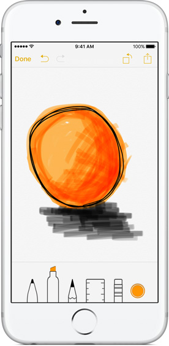

potatotips#21（iOS・Android開発Tips共有会）のまとめ
9/16にpotatotips#21（iOS/Android開発Tips共有会）にブログまとめ枠で参加しました。
【第21回】potatotips(iOS/Android開発Tips共有会)のまとめ
今回の主催者のブログに当日のパワポがまとまっています。
http://tech.recruit-mp.co.jp/event/potatotips-21/
あと、アジェンダなどはこちらに記載されています。
https://github.com/potatotips/potatotips/wiki/potatotips-21
気になった発表（iOS中心です）
3D Touch on iPhone (iOS)
シュミレーターで3Dタッチ機能が動かなかったので動作確認はできてない
Whta is 3D touch?
- iOS9で導入された感圧機能を使った新しい機能
- 対応端末はiPhone6S/iPhone6S,plus
- 一部の機能は9.1からだが、ほとんどは9.0で実装できる
- Pressure Sensitivity・Quick Actions・Peek and Popという3つのインタラクションが追加された

Pressure Sensitivity
- タッチの圧力を判定
- UITouchクラスに追加されているforce(CGFLoat)プロパティを判定する
- iOS9.1からはUITouchクラスにスタイラスの角度取得のプロパティも追加される予定
Quick Actions
- ホームアプリアイコンの押下時にメニューが表示できる
- static quick action
- info.plistで実装
- 表示できる数には限りがある
- dynamic quick action
- コードで実装
- アクションがタップされた時はAppDelegateのデリゲートメソッドで取得できる
Peek and pop
- 次の画面を出す前にチラ見（Peek）できる
- インタラクションの流れ
- 特定のエリアを軽く押す(Peek)
- Peek画面が表示される（押すのをやめると元の画面に戻る）
- さらに強く押す(Pop)とPeek画面が大きくなり、目的のview画面 となる
- 実装
- peekのviewを指定して、UIViewControllerPreviewingDelegateを設定する
- peekアクション時、popアクション時の各デリゲートメソッドで表示サイズの処理などを行う
- UIWebViewやMKWebViewでは、すでに実装されている。allowsLinkPreviewをtrueにすると使えるようになります。（デフォルトはfalse）
バグのことは嫌いになってもXcodeのことは嫌いにならないでください。 (iOS)
- XcodeでのデバッグについてのTips
Xcodeでデバッグ時のTips
- いつもクラッシュしたときにAppDelegateで止まる
-> 全ての例外発生時を対象ににブレイクポイントを設定し、ブレイクポイント発生時にActionを指定する(po $arg1)
-> ええ感じのところで止まり、ええ感じの出力 - AutoLayout制約でのエラー
-> シンボリックブレイクポイントを設定する
-> 制約矛盾が発生した段階でブレイクし、viewの階層表示ができて分かりやすい
Create Layouts with the Wearable UI Library (Android)
Android WearはUIコントロールたくさんあるんだなー（Apple Watchは超少ないのでうらやましい） #potatotips（当日のツイート）
-> 同感です。Android WearのWearable UI Libraryの各UIを紹介されていました。
（以下は、興味ありましたが遅れて見れませんでした、、、）
Swift compile time is so slow (iOS)
-> Swiftのコンパイルが遅いのでソースファイルを一つにまとめてビルドしてみたらコンパイル時間が大幅に短縮された話
Apple Watch Tips (iOS)
-> 画像のローディング時の工夫について
感想
主催者によるのかもしれませんが、前回参加したときよりゆるい雰囲気でしたw
それと、前回参加してから半年ぐらいは経っていると思いますが、Androidの割合がかなり増えているようでした。
直近の新機能について発表されていたのは、iPhone6Sから搭載される3Dタッチのみで、 まだ端末が出ていない上にシュミレーターでも動かなかったということでしたが、 発表をきいている限りでは、これまでの長押しで提供できたインタラクションとそんなに変わらないんじゃないかと思いました。
次回以降tvOSとか、watchOS2とか、SearchAPIsとかについての実装例とかありそうでおもしろそうです。